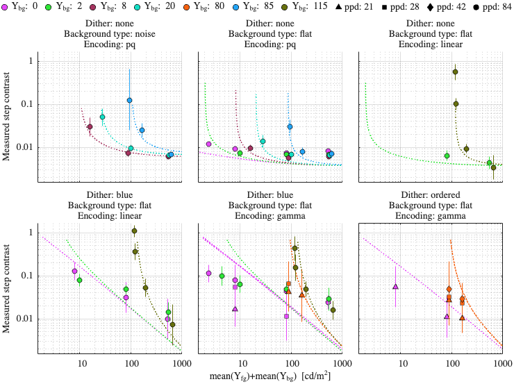
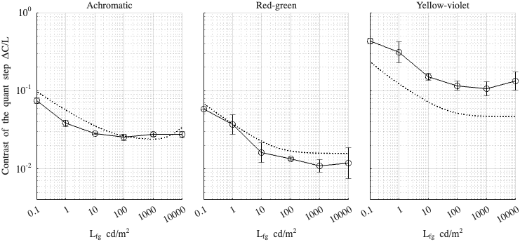

Fitting config: dither, model: daly_masking_inv_f
Fitting error (RMSE): 2.3581
Model parameters
p.beta = 1.05327; p.beta_cc = 1; p.gs_num = [ 0.462713 0.2 0.964944 ]; p.noise_params = [ 0.428139 0.696367 0.684776 ]; p.dither_mask_params = [ 0.00293647 1.00658 0.993528 ]; p.blue_dither_params = [ 28.1094 150.505 2.40666 2.73579 ];
Dataset: [ar2025]
Scaling factor: 0.328428

Dataset: [kim2020]
Scaling factor: 1.08003
